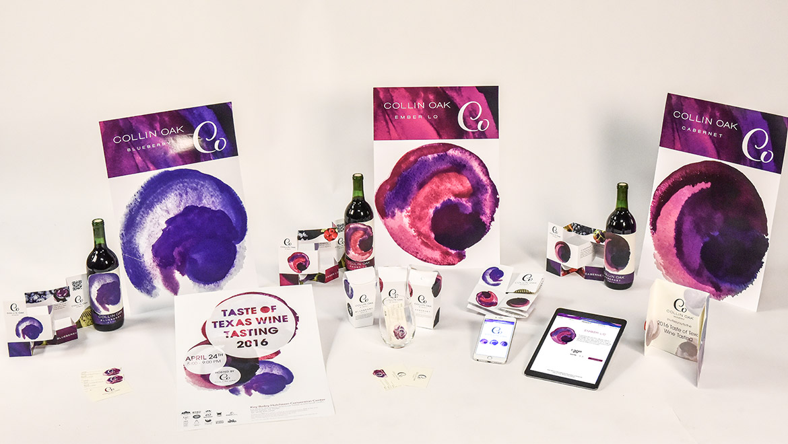
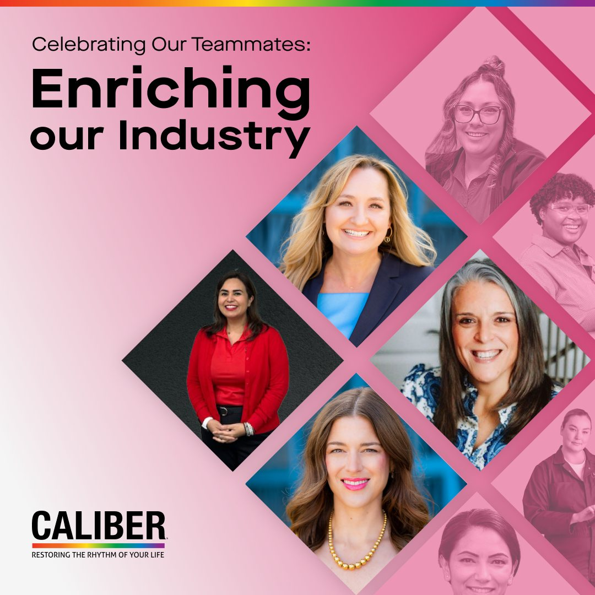

Find the idea that connects.
Understand the audience, simplify the message and explore visual directions that express what makes the brand distinctive.
See identity exploration ↗Dallas–Fort Worth · Brand, print & digital design
I turn audience needs and marketing goals into distinctive visual identities, print collateral and digital campaigns—carrying the idea from first concept to the details of production.


Selected projects showing visual storytelling, typography, brand consistency and creative adapted across print, digital and environmental formats.
Identity exploration, a distinctive visual language, and applications across web, collateral, presentations and environmental graphics.

A campaign concept carried through email, web banners, posters, mobile banners and digital signage.

Watercolor marks, lettering and coordinated print and packaging applications bring a distinctive brand story to life.

Campaign direction and execution across social, email and landing pages, with brand standards for multiple lines of business.

A reusable Figma component library that brings vendor identities into consistent desktop, tablet and mobile experiences.

Website hierarchy, responsive design and a campaign landing page built around distinct audiences and business goals.
Educational projects exploring research, information architecture and interface design. These complement my professional brand and digital practice.
I connect the audience and marketing objective to a clear visual idea, then work with stakeholders to refine the concept and carry it consistently through production.
Understand the audience, simplify the message and explore visual directions that express what makes the brand distinctive.
See identity exploration ↗Typography, composition, imagery and hierarchy stay intentional as a concept moves from a printed piece to a social post, email or screen.
See multichannel production ↗Build reusable components, templates and clear standards that preserve the visual language as the work expands.
See responsive components ↗Figma · Illustrator · Photoshop · InDesign · After Effects · WordPress
Reported results from earlier ADI landing-page and responsive design work. These are distinct from the vendor brand-page component project.
Landing-page engagement
Bounce rate on responsive work
User interactions and conversions
A few words from marketing directors and teammates at the companies above — the people who saw the work get made, not just the finished file.
Interested in bringing my brand and production design experience to a creative team connecting Dallas audiences with live music, community and education.